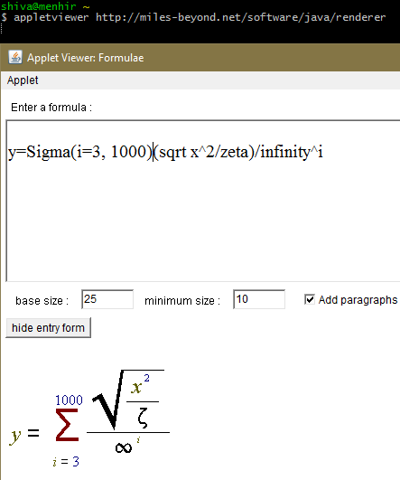
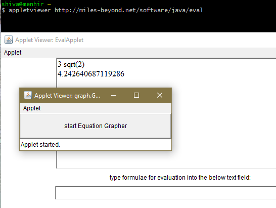
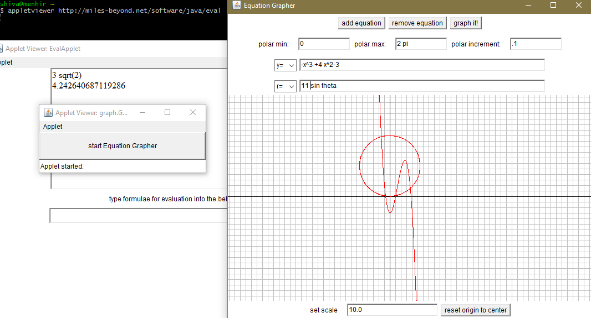

Graphing Calculator (legacy applet)
You can still run these if you have appletviewer installed. The command is shown in and above
each image. Most browsers no longer support java applets, due to security concerns.
These applets date back to a distance education math project for a late 1990’s dotcom that folded (distanceed.com).
Formula Renderer
appletviewer http://miles-beyond.net/software/java/renderer

Calculator
appletviewer http://miles-beyond.net/software/java/eval

Grapher
Start the calculator using:
appletviewer http://miles-beyond.net/software/java/eval
then click the Start Equation Grapher button.
